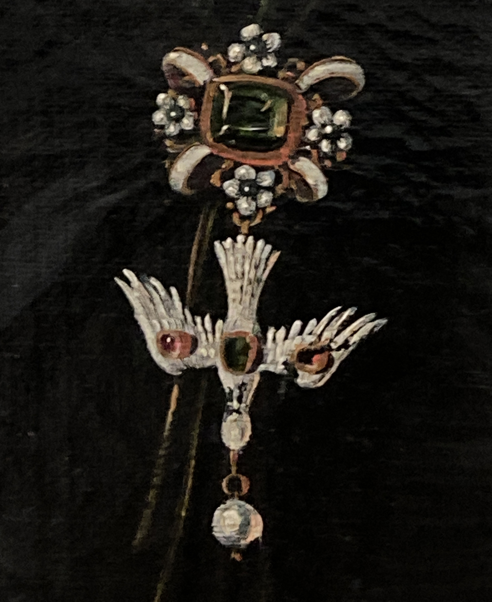

Hier entsteht ein digitales Erkundungstool zu einer im Beatrice von Wattenwyl-Haus durchgeführten Erkundungstour, sowie die Zusammenstellung einer Gruppe von Taubenanhängern auf Berner Frauenportraits aus dem 17. Jahrhundert.
Zu den Taubenanhängern gibt es auch eine Sammlung der bisherigen kunsthistorischen Erschliessung.
Nachfragen und weiteres gerne an
info@taubenklauben.ch.



Johannes Dünz
(* 17.01.1645, Brugg,
† 09.10.1736, Bern)
Bildnis Elisabeth von Werdt-Andreae, 1672, Öl auf textilem Bildträger [Leinen/Hanf]
113.5 × 82.5 cm, Kunstmuseum Bern
Foto: Kunstmuseum Bern

Porträt von Katharina Tscharner geb.
Lüthardt verh. Berseth (1626-1704), 1675, Öl auf Leinwand, 114.0 × 84.5 cm, H/41359
Porträtdok. 6372
© Bernisches Historisches Museum Bern, Foto: Christine Moor. Eigentum der Gesellschaft zu Ober-Gerwern

Porträt von Ursula Esther Schöni (* 1643), 1693 (1670?), Öl auf Leinwand, 70.5 × 56.5 cm
Porträtdok. 4966
Foto: Luca Blum